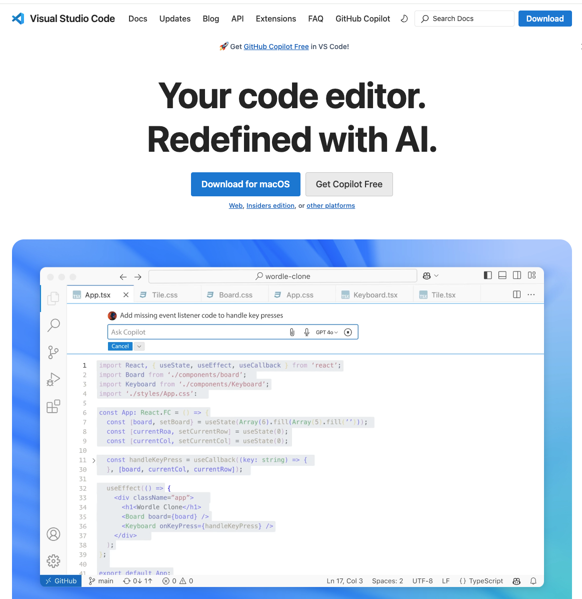
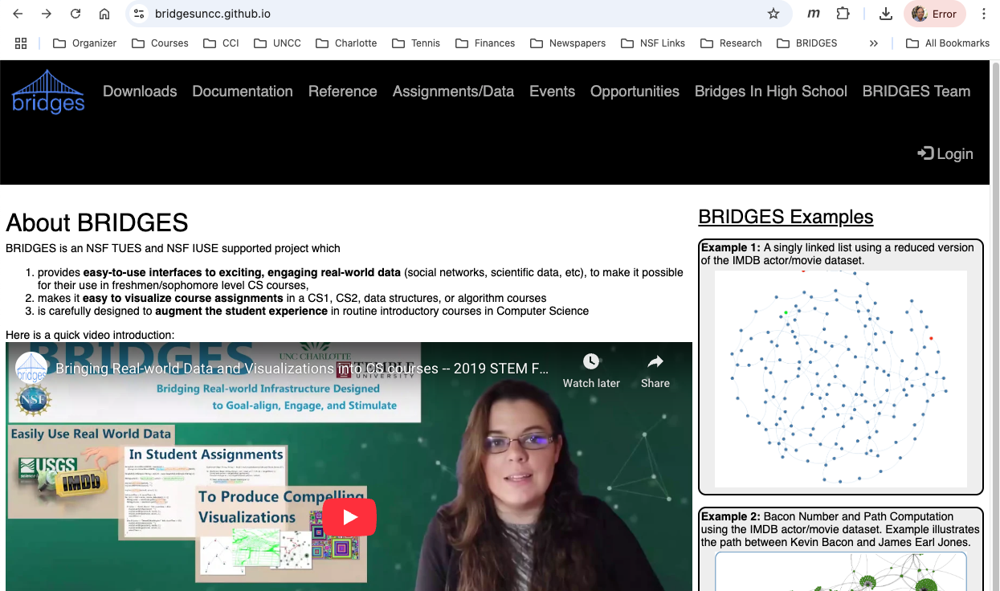

Step 1: Install WSL and Ubuntu
- Open PowerShell and run the following command:
wsl --install -d ubuntu
- Follow the prompts to create a local Ubuntu account;
Remember the password you set!
|
Step 2: Install VS Code
- If you do not have VS code installed, download it from
VS Code Site
and install it on your computer.
|

|
Step 3: Set Up VS Code and WSL
- Open VSCode
- Go to the Extensions tab and install the WSL Extension
- Follow the prompts to connect your WSL instance with VSCode
|
Step 4: Install Needed Ubuntu Linux Packages
- Press 'ctrl + shift +' to open the terminal
- Run the following commands from the terminal:
sudo apt update
sudo apt install gcc
sudo apt install build-essential
sudo apt install g++-14
sudo apt install gdb
sudo apt install libcurl4-openssl-dev
|
|
|
Step 2: Create Bridges Account
Visit the Bridges
main page
and create yourself an account by clicking the login button
on the top navigation bar. Please ensure that
your user id is devoid of spaces, as it will be
used as part of the web link for your projects.
After creating your account, click
on your profile name in the upper right corner to
view your profile. Once in your profile, you will see your
API Key; you will need this API key later
in the tutorial(as well as in every BRIDGES program
you write). NOTE: Make sure to remember
your password.
|

|
Step 5: Set up Project Directory
- At this point, you have an Ubuntu linux system on your Windows machine and you can directly work on it like any other Linux machine and run BRIDGES programs. The compiler
is g++ and any additional needed tools can be installed using the apt tool.
- To use the VSCode IDE and Debugger, you will need to set up
a project and add files to it and set up its configuration in a
file called tasks.json
- Use VSCode's menus to create a new project and then create
a file for your BRIDGES program.
- Go to the BRIDGES Tutorial Page and copy a C++ tutorial program
into a file, for instance a singly linked list example.
- Copy paste this program into your source code file.
- Create a folder called .vscode in your project (alternately,
the first time you hit the Play button, this will be created).
- Add this tasks.json file
in the .vscode directory
|
Step 5: Configuring VS Code
- Your tasks.json, which is a JSON file, is used to build
the compile command that will
be used by VS code to execute your project. You will
need to make the following changes to run BRIDGES programs without errors
- Take a look at that file using a text editor. Make sure your compile
command is set to /usr/bin/g++
- Next look at the args variable, containing a number of
options. It is a sequence of option flags and its corresponding values.
You will need to modify two of the arguments that pertains to your
BRIDGES installation:
- -I argument is the path to your BRIDGES include files;
modify this path to where you placed your BRIDGES source files and
point to its include folder
- -L argument is the path to your BRIDGES library;
modify this path to where you placed your BRIDGES source files and
point to its lib folder
You should not have to change any other option.
|
Step 5: Running your BRIDGES program
- Hit the Play button to run your program
- If prompted, select Build with G++ from the dropdown
- You should see your compilation happening on your Terminal(Console)
and you will see a web link appearing
|